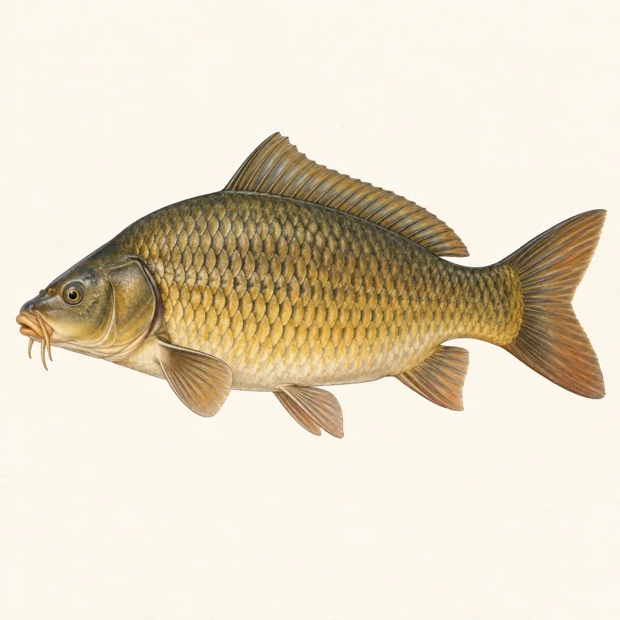
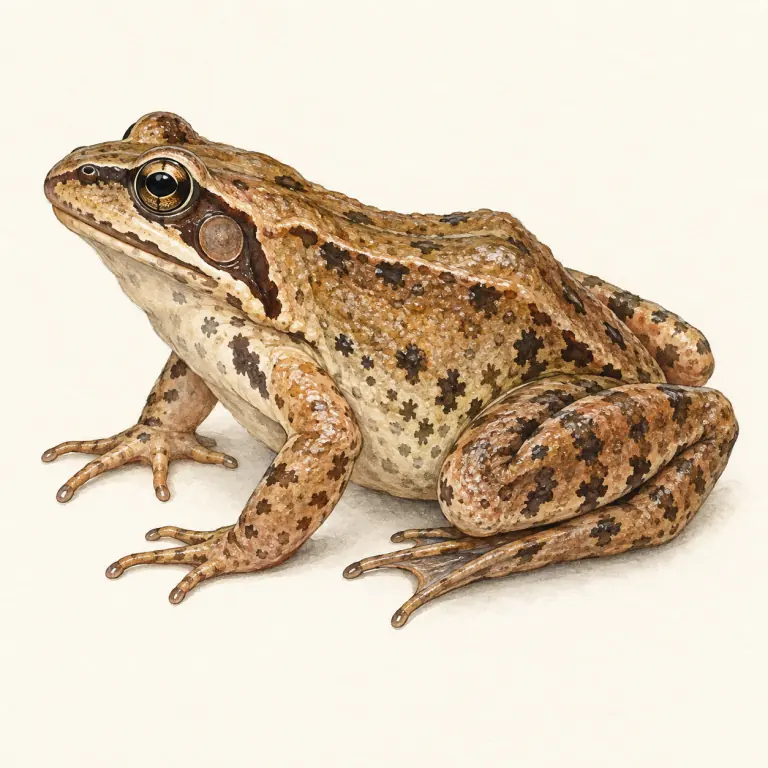
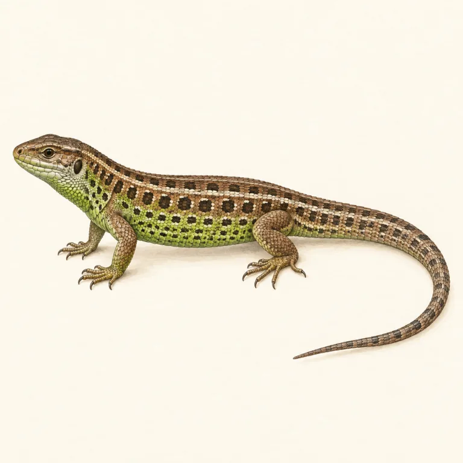
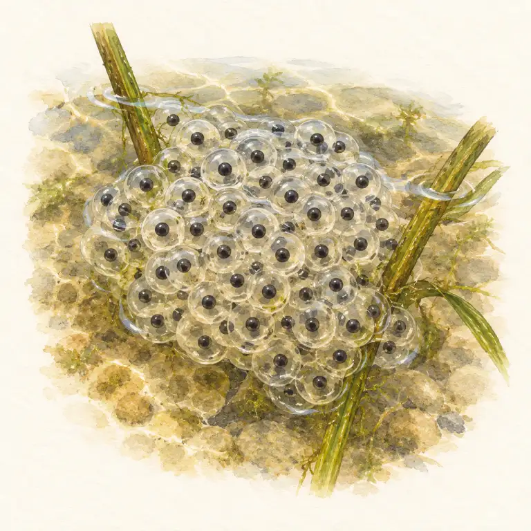
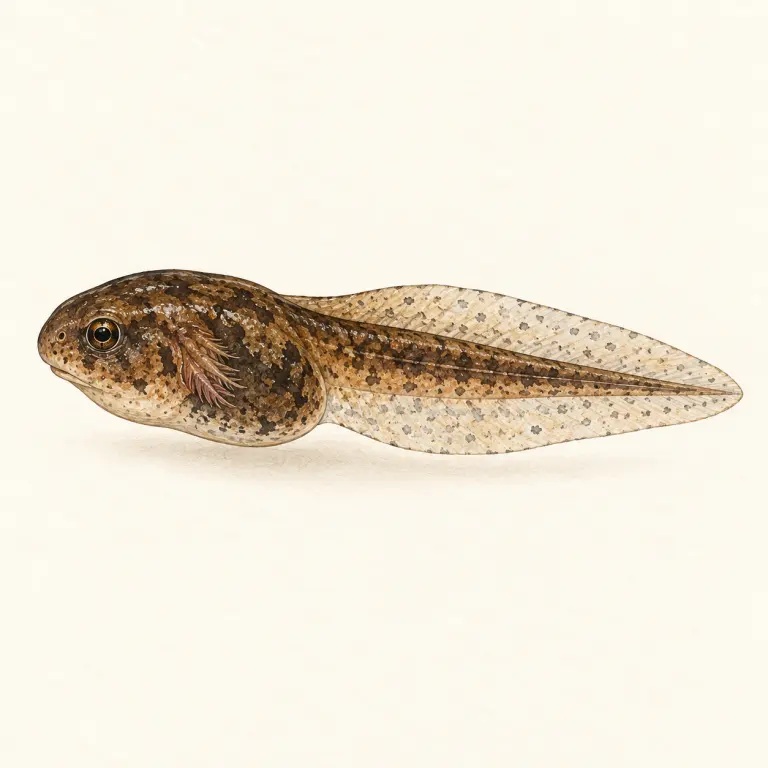
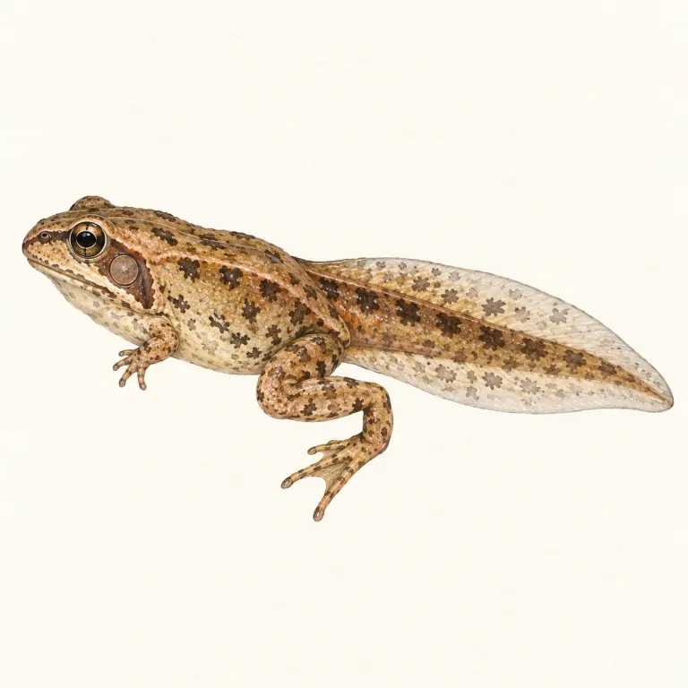
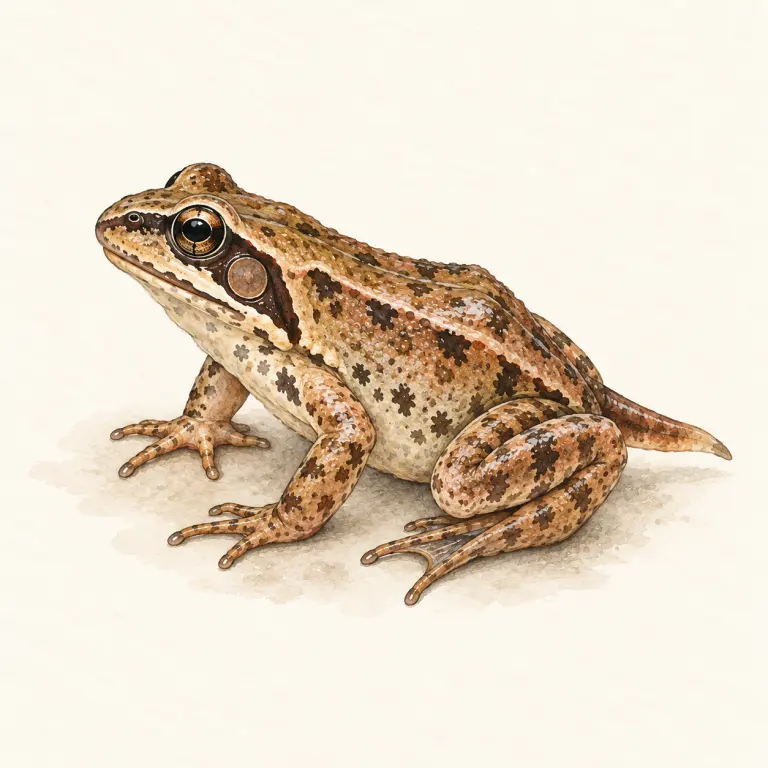
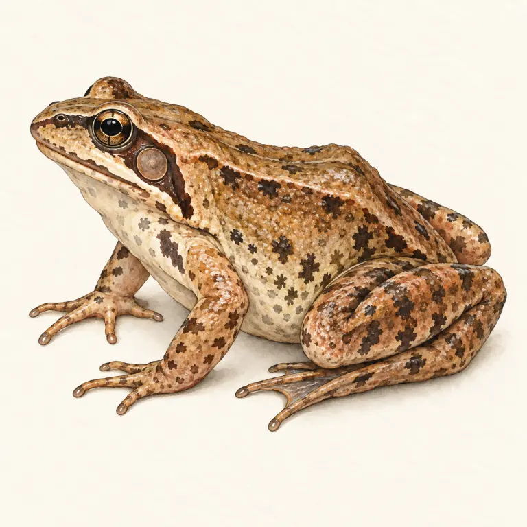

Pro 7. ročník: stavba těla studenokrevných obratlovců a naši zástupci.
Kapr obecný · ryba

žábry přijímají kyslík z vody
šupiny kryje tenká vrstva slizu
ploutve řídí pohyb a rovnováhu
Skokan hnědý · obojživelník

dospělec dýchá plícemi i vlhkou kůží
zadní končetiny slouží ke skoku a plavání
pulec dýchá žábrami
Ještěrka obecná · plaz

dýchá pouze plícemi
suché rohovité šupiny brání ztrátě vody
ocas může při ohrožení odvrhnout
Proměna žáby krok za krokem
Žába během metamorfózy mění způsob pohybu i dýchání. Prohlédni si pořadí a potom si je procvič.

vajíčka

pulec

pulec s nohama

mladá žabka

dospělá žába
Všechny tři skupiny jsou studenokrevné – teplota jejich těla závisí na okolí.
Ryby dýchají žábrami, obojživelníci plícemi i kůží a prodělávají proměnu,
plazi dýchají plícemi a mají suchou šupinatou kůži.